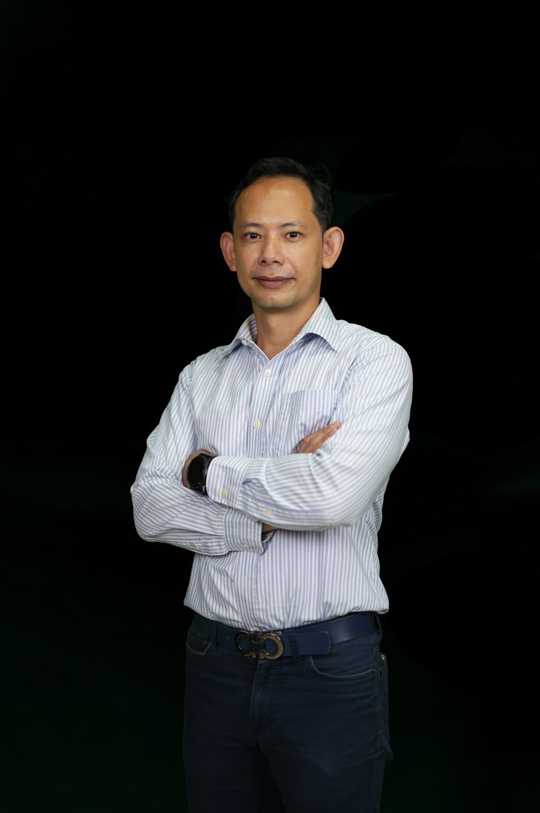

Dr. Warin Wattanapornprom
Artificial Intelligence · Combinatorial Optimization · Metaheuristics · Bioinformatics · Intelligent Systems
Asst. Prof. Dr. Thittaporn Ganokratanaa
Computer Vision · Deep Learning · Video Analytics · HCI · Intelligent IoT

Asst. Prof. Dr. Peerasak Intarapaiboon
Natural Language Processing · Information Extraction · Fuzzy Systems · Intelligent Information Systems
Assoc. Prof. Chukiat Worasucheep
AI & Machine Learning · Computational Intelligence · Optimization · Financial Analytics
Assoc. Prof. Dr. Wiboonsak Watthayu
Artificial Intelligence · Data Science · Computational Intelligence · Decision Support & Modeling
Dr. Wittawin Susutti
Computer Vision · Image Processing · Machine Learning · Intelligent System Monitoring
Dr. Suvil Chomchaiya
Human–Computer Interaction · UX/UI · Usability Engineering · Intelligent Applications
ติดตามข่าวสารหลักสูตร กิจกรรมนักศึกษา ผลงาน และประกาศต่าง ๆ ผ่าน Facebook อย่างเป็นทางการของ ACS
เยี่ยมชม Facebook ACS ↗